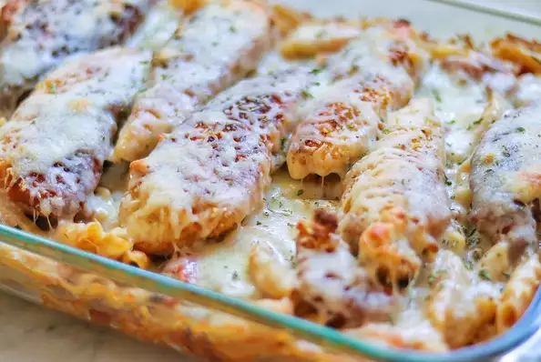

Anthony's Chicken
Anthony's Chicken
Breaded chicken breast covered with a honey mustard barbeque sauce containing chopped bacon, diced tomatoes and onions. This dish is baked over pasta topped with Monterey Jack cheese.
Ingredients
- 1 pound dry penne pasta
- 2 eggs
- ½ cup milk
- salt and pepper to taste
- 6 (4 ounce) skinless, boneless chicken breast halves
- 1 cup bread crumbs
- ½ cup olive oil for frying
- 2 tablespoons butter
- 1 pound sliced bacon
- 2 tomatoes, diced
- 1 onion, diced
- 1 (18 ounce) bottle honey mustard barbecue sauce
- 3 tablespoons spicy brown mustard
- 1 (8 ounce) package shredded Monterey Jack cheese.